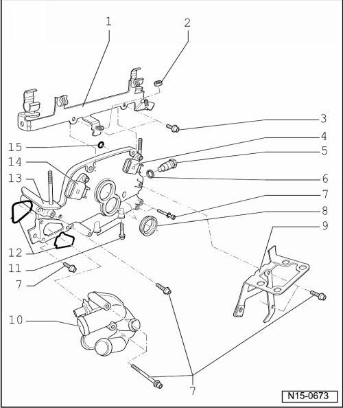
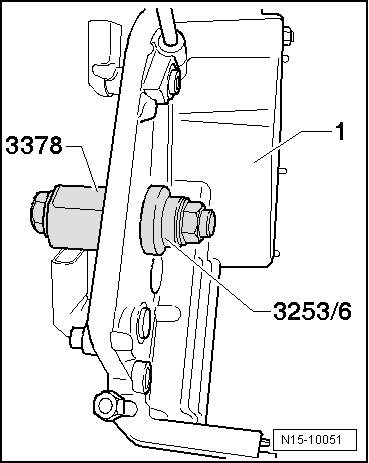

Cylinder Head Cover, Assembly Overview
Cylinder Head Cover, Assembly Overview
• The cover can only be removed or installed with the engine removed.

1 Wiring router
• For wiring harness
2 8 Nm
3 8 Nm
4 Camshaft Position (CMP) sensor 2 (G163)
• For exhaust camshaft
• Before disconnecting, mark allocation of connector to component
5 Chain tensioner, 40 Nm
• For camshaft roller chain --> [ (Item 9) Camshaft roller chain ] Cylinder Head, Assembly Overview
• Only rotate engine with chain tensioner installed
6 Seal
• Replace if damaged or leaking
7 8 Nm
8 Seal
• For camshaft adjustment valve 1 (N205), --> [ (Item 15) ] Cylinder Head, Assembly Overview and Camshaft adjustment valve 1 (exhaust) (N318), --> [ (Item 16) ] Cylinder Head, Assembly Overview
• Replace if damaged or leaking
9 Bracket
• For after-run coolant pump (V51)
• For evaporative emission (EVAP) canister purge regulator valve (N80)
10 Coolant thermostat housing
• Coolant hose connection diagram --> [ Coolant Hose Connection Diagram ] [1][2]Cooling System.
11 23 Nm
12 Seal
• Replace if damaged or leaking
13 Cover
• Prepare cylinder head gasket for installation --> [ Cylinder Head Gasket, Preparing for Assembly ]
14 Camshaft Position (CMP) sensor (G40)
• For intake camshaft
• Before disconnecting, mark allocation of connector to component
15 O-ring
• For oil channel seal
• Replace
• Oil before assembling
Cylinder Head Gasket, Preparing for Assembly

Special tools, testers and auxiliary items required
• Sealant (D 176 501 A1)
Procedure
- Clean old sealing compound from the 3 mm holes in the cylinder head gasket - arrows -.
- Fill the 3 mm holes in the cylinder head gasket with sealant (D 176 501 A1) and coat the sealing surface on the cover and sealing flange with sealant (D 176 501 A1). Install the cover immediately!
• With the cylinder head installed only half of the holes in the cylinder head gasket are visible.
Cover, Installing
Special tools, testers and auxiliary items required
• Fitting sleeve (3378)
• Fitting sleeve (3253/6) from wheel bearing assembly set (3253)
Installing
- Do not lubricate seal.
- Fit sealing ring using seal installer (3378) into cover - 1 - and pull in flush using seal installer (3253/6) from assembly tool (3253).
